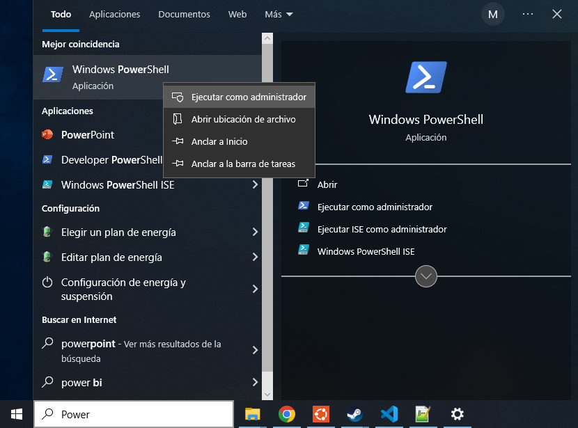
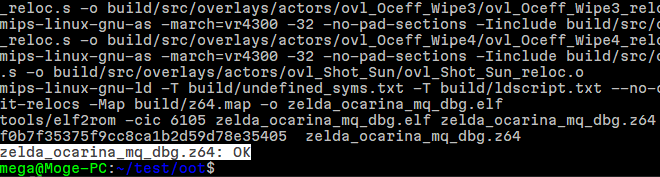

Installing and setting up WSL
1.- Go to PowerShell by clicking on the bottom-left Windows icon, typing power , right-clicking to the first result and clicking in Execute as administrator
2.- Once the blue terminal is oppened, write the command: wsl --install -d Ubuntu
3.- Go to Windows tab, type: Ubuntu and open the first result
Note
The first time you open Ubuntu it will ask you for a name and a password, PLEASE remember the password
4.- Type in the Ubuntu terminal: sudo apt-get update -y
Note
The first time you execute a command starting with “sudo” it will ask for the password
5.- Now some elements are needed so type: sudo apt-get install git zip unzip jq build-essential binutils-mips-linux-gnu python3 libpng-dev gcc-mips-linux-gnu -y
6.- Create a oot folder with: mkdir OOT
7.- Go inside the folder: cd OOT
8.- Clone the repository: git clone https://github.com/zeldaret/oot.git
9.- Enter inside the repository: cd oot
10.- Download the baserom_original.z64 and copy it to the repository folder. Example: cp /mnt/c/Users/megab/Desktop/baserom_original.z64 .
Warning
The name is important, the file has to be called baserom_original.z64
Note
If you have an original copy of the game, you can pass the rom directly or find it in Internet Archive. You are looking for an unmodified mqdebug.z64 file
Note
To reach the PC files, you need to go to /mnt/[drive in lowercase]/[normal path to the file]
11.- Execute “make” command to set the environment up. You can add the “-j[number]” to set up the number of cores to use: make -j8 setup
Note
You can check your number of disponible cores with: nproc
12.- Execute simple “make” command to test the environment: make -j8
13.- If the last message is “zelda_ocarina_mq_dbg.z64: OK” everything is correctly setted up 😃
14.- Close the terminal clicking in the top-right X